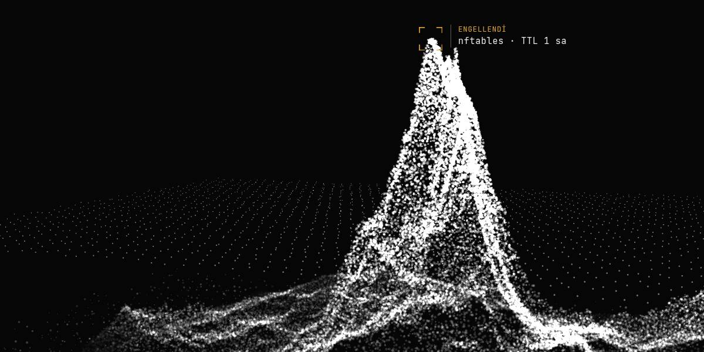
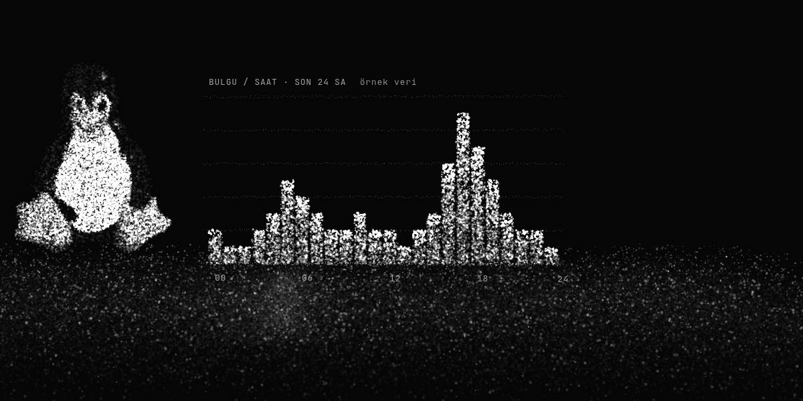

Sunucunda ne olduğunu, veriyi sunucudan çıkarmadan gör.
NexGuard Linux sunucunu izler: saldırı var mı, trafik nereden geliyor, ayarlarında açık var mı. Gerekirse saldıranı engeller, birden çok sunucuyu tek ekranda toplar. Her şey kendi makinende çalışır.
Bağlantılar çekirdeğin TCP tablosundan, başarısız SSH girişleri sistem günlüğünden okunur. İsteğe bağlı algılayıcı UDP, ICMP ve SYN sellerinin kaynaklarını yalnızca paket başlıklarından sayar; içerik okumaz.
Paket hızı, bant, yarı açık bağlantılar ve IP başına bağlantı 5 saniyede bir ölçülür. Eşik aşılınca durum renk değiştirir ve nedeni yanında yazar; Telegram ya da webhook ile haber verilir.
NORMAL · UYARI · SALDIRI eşikler panelden ayarlanır

03 ADIM 03 / 04 · YANIT
Engelle
Otomatik engel varsayılan olarak kapalıdır. Açarsan ya da bir IP'yi panelden onaylarsan, adres engel yardımcısıyla nftables'a yazılır. İzin listesindeki adresler ve açık SSH oturumların asla engellenmez.
nft table inet nexguard süre 1 dk – 24 sa

04 ADIM 04 / 04 · PANEL
Gör
Bağlı IP'ler yerel veritabanıyla ülke ve ağ sağlayıcısına eşlenir; 2B haritada ya da döndürülebilen 3B kürede görünür. Bir IP'ye tıklayınca panelin onun hakkında bildiği her şey tek çekmecede açılır.
127.0.0.1:8787 ssh -L ile tünel
05 · MODÜLLER
Panelde neler var
Panel FastAPI ile yazılmış, root olmadan çalışır ve yalnızca 127.0.0.1 üzerinde dinler. Engelleme ve paket algılama ayrı, küçük yardımcılarla yapılır; panel yalnızca istek dosyası yazar, yardımcı onu doğrulayıp uygular.
01
Genel bakış ve DDoS izleme. Durum bandı, paket ve bant grafikleri, yarı açık bağlantılar, son olaylar. Eşik aşımında bildirim.
02
Canlı harita. Bağlı kaynaklar ülkelere göre; 2B harita ya da 3B küre. Kürede ülke sınırları ya da uydu görüntüsü (gri veya renkli), tekerlekle 8 kata kadar yakınlaştırma.
03
Coğrafya. IP'lerin ülke, ağ sağlayıcısı ve Tor/VPN işaretleri; DB-IP Lite veritabanıyla yerel sorgu. Görünen konum çoğu zaman aracı ağdır ve panel bunu açıkça söyler.
04
Denetim. SSH ayarları, açık portlar, güvenlik duvarı, kullanıcılar, dosya izinleri ve çekirdek ayarları okunur; her bulgu için komut önerilir. Hiçbir şey kendiliğinden değiştirilmez.
05
Savunma. Elle ya da isteğe bağlı otomatik engel, izin listesi, Cloudflare saldırı modu ve hat dolduğunda sağlayıcıya ölçümlerle süzme isteği.
06
Tuzaklar. Ayrı bir portta sahte SSH (Cowrie): saldırgan girdiğini sanır, denediği parolalar ve yazdığı komutlar kaydedilir. Çok portlu TCP tuzağı ise Telnet, RDP, VNC gibi portlarda bağlananın ilk baytlarını kaydeder; engellemez.
07
IP detayı. Tablodaki bir IP'ye ya da küredeki ülkeye tıklayınca: ülke ve ağ, anlık bağlantı, SSH denemeleri, tuzak kayıtları, olaylar. Engelleme ve izin listesi iki adımlı onayla.
08
Filo. Birden çok sunucunun özetini tek panelde toplar; her sunucu yalnızca okuma yetkili bir anahtarla bağlanır.
06 · SINIRLAR
Yapamadıkları
01
Hattı dolduran saldırı sunucuda durmaz. Bağlantı dolunca sunucudaki kural işe yaramaz. Panel tespit eder, haber verir, sağlayıcıya ve Cloudflare'e yönelik adımı önerir ya da sen açtıysan atar.
02
Harita yalnızca TCP bağlantılarını gösterir. UDP ve ICMP sellerinin kaynakları yalnız algılayıcı kuruluysa ve yalnız paket başlıklarından görünür.
03
Konum ülke düzeyindedir. Görünen konum çoğu zaman barındırma ağı, VPN ya da Tor çıkışıdır; saldırganın gerçek yeri değildir.
04
Tuzak Docker gerektirir. Sahte SSH çekirdek kurulumun parçası değildir. TCP tuzağının portlarına dışarıdan ulaşılması için güvenlik duvarında açılmaları gerekir.
05
Bağımsız denetimden geçmedi. Paneli internete doğrudan açma; SSH tüneli kullan, açman gerekirse önünde HTTPS ve iki adımlı doğrulama olsun.
07 · KURULUM
Kurulum
Python ile çalışır, veritabanı sunucusu gerektirmez. Debian 13 ve Python 3.13 üzerinde denendi.
1 KODU AL
git clone https://github.com/m3lonxd/nexguard.git /opt/nexguard
cd /opt/nexguard
Servis dosyası /etc/systemd/system/nexguard.service, sonra sudo systemctl enable --now nexguard. Kendi adreslerini /etc/nexguard/izinli dosyasına yaz; bunlar asla engellenmez. İlk iş: Ayarlar'dan iki adımlı doğrulamayı aç, Coğrafya'dan veritabanını indir, Denetim'i çalıştır, bir bildirim kanalı ekle.